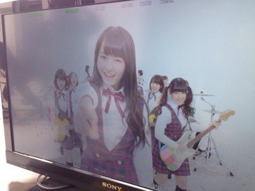
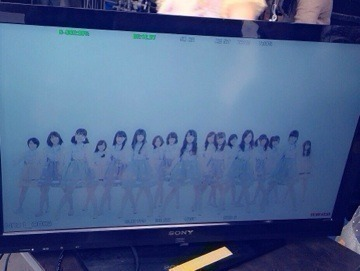
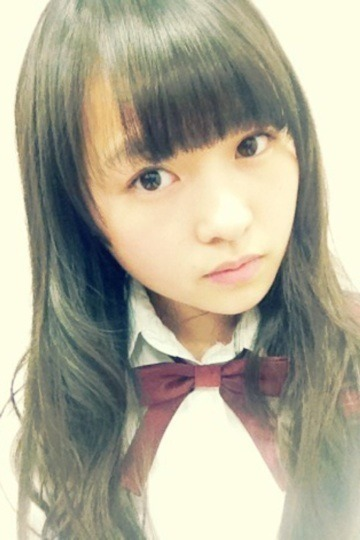
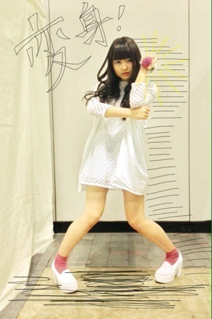
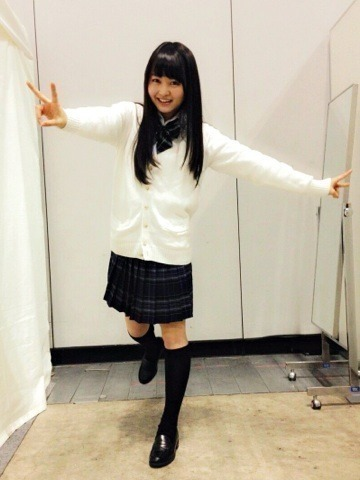
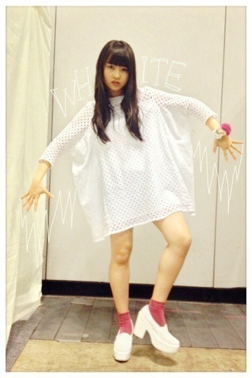
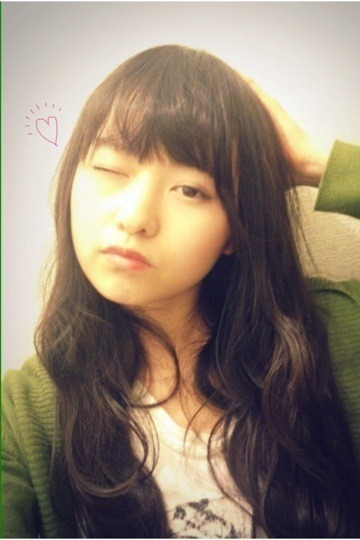
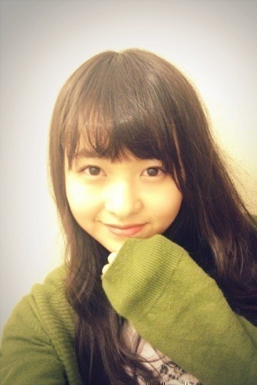
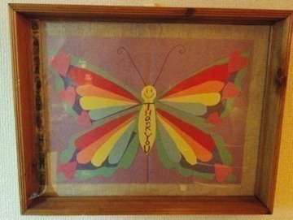
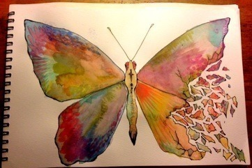

2014/0311Tue無限の疾走。554回目
東日本大震災が3年。
一日一日を無駄にしない
一瞬一瞬を大切に
心に留めます。
全国握手会にて
チャリティー募金箱を設けます。
御協力よろしくお願いします。
被災された方々へ
少しでも早い復興を願います。
御冥福をお祈りします。
8thのアンダー曲
生まれたままで
昨日、ゆったんのおに魂にて解禁
そしてMVも解禁されました。

ジャケットも公開されました！
Type-Cがアンダー盤として
発売されます。
アンダーメンバーが
ジャケットになるのは初めてのこと。
テーマは「泣き笑い」。
自然とぼろぼろ泣けてきました。
自分の表情に可愛さとか
何もないかもしれないけど、
どうして泣いてるのか
どういう状況なのか
自由に想像してください。
ジャケ写みんなで飾れて嬉しい。
いちばんお気に入りです！
そして、Type-A〜Cについてくる
「全国握手会参加券兼
スペシャルプレゼント応募券」。
このスペシャルプレゼントがなんと
アンダースペシャルライブなのです！
今まで地方イベントなどで
アンダーだけが出演することは
何度かありましたが、
今回はれっきとした
アンダーのイベントです。
楽しみで仕方ないよ〜
こうして新しいことをやっていく中
アンダー曲のセンターを
務めさせていただくことになりました。
2nd狼に口笛を以来になります。
あの時は何もわからないまま
ポジションに立っていましたが、
あれから1年半以上経ちました。
今となってはこのポジションへの
考え方も変わりました。
ただの贅沢かもしれないけど、
ずっとリベンジしたいと思ってました。
発表された時は喜びよりも、
何か大きなものを
任せられてる気がする
変わらなきゃ
という使命感の方が大きかったです。
生まれたままで はとても前向きな曲。
こんな素敵な曲与えられたんだから
もうがむしゃらに走るしかない。
MVも今まで以上に気合を入れて
撮影に臨みました！
走ったり飛んだり跳ねたり
座りながら踊ったり
寝転んで踊ったり見所満載。
とにかく楽しかった〜
感想待ってます♪
今回、CDの1つが
アンダー盤として出たり、
アンダーだけのライブも始まるなど
初めてのことがたくさんある分、
大きな責任と使命があります。
この曲のセンターが
万理華でよかったと思ってもらいたい。
たくさんの方に私たちのことを
知ってほしい。
私たちアンダーメンバーが
ひとつのチームとして成長すること、
強くなることで乃木坂46は
もっと大きくなると思うんです。

二期生からまいちゅんが昇格し、
17人となった新生アンダーメンバーに
期待していてください！
最強のメンバーだ！
っていうのを証明してみせます。
まりか
2014/0307Friスローモーション。 553回目

最近兄とカレー作ったんだ
ってねねに報告したら
私は小5で一人で作ってたよ
って笑顔で返されました。
まだまだ寒いけど
もう花粉が飛んでます。
春になったら辛いなーー
鼻にくるよーー
昨日はNOGIBINGO!2の
最終収録でした！
あっという間だったなあ。
1とはまた違って、肩の力をぬいて
収録できていたかもです。
あと、最近は
いろいろな撮影してます
気づいたら片想いのMV
公開されましたー
曲もダンスも好き。
昨日初めて楽屋で見たけど涙腺が...
カップリングもこれから
続々と公開されます。
アンダー曲は表題曲とは
違ってポップな感じなんだよ〜
33色のラブストーリー
マスタード色の女の子
先輩に憧れてる後輩を演じています。
今は友達編ですが
告白編、恋人編と続くので
電話してみてね！
きゃーーーーーー
はずかしーーーーーー
もうこの勢いで変身するわー
しゃきーーーーん！

まりか
2014/0304Tueチャージ中。552回目
バレッタ最後の個握は
パシフィコ横浜で！
昨日はどこのレーンも華やかでした。

1部 ストレート
2部 二つ結び
ラストJKということで、
現役の内に制服を着ました。
リボンと靴下だけ自前。
あとは全部みなみに借りました。
スカートは折ってません。
みなみありがとう！

3部 ゆる巻
ワンピース/ヒールスリッポン mystic
ボンボンヘアゴム カオリノモリ
ピンクをアクセントにほぼ白！
普段膝丈が多いからミニ丈、
ヒールも高めで珍しいー
このワンピを私は
はんぺんワンピースと呼んでいます。
たくさんのおめでとう
ありがとうございました。
3部終わりにファンのみなさんに
お祝いしていただきました。
服はなんで白を選んだかというと、
実は意味がありまして...
18歳になってこれからの目標かな。
真っ白そのまま、いろんな色に
自分を染められるようになりたい
これをみなさんの前で
言いたかったんですけど
全部吹っ飛んだ！！
レーンも横断幕もバルーンも
好きな緑色で、握手する所は
私の部屋をイメージしてくれて...
お花もケーキも風船もメッセージも
全部私のためにしてくださったことに
本当に感激しました。
去年のこと考えると余計に、
それくらい17歳の一年間は
濃いものだったんだと
改めて思いました。
ねねからのお手紙
言ってくれる前に泣いてしまった。
ありがとうだいすき
こんなにたくさんの方が
私を支えてくれているんだ。
もちろん、握手会にくる人だけでなく
コメントで応援してくれる方も！
応援してくださる方が
増えてきているの実感しています。
幸せです。
みなさんがいるんだから
こわいものなんてないね！
本当にありがとう。
いつもありがとうございます。
そしてこれからも
伊藤万理華をよろしくお願いします。
8thの握手会もよろしくだーーーーー

精一杯のウインク
まりか
2014/0301Satぬいぐるみが舞う。 551回目
昨日はお仕事終わった後
川後さんとぶらぶらしたよ。
色ちゃんコミック展いった！
かわいかった♪
ひなちゃんとは最近
お互いの趣味の話しかしてないな。
系統は違うけど話が合います。

モバメの返信コメントにしてくれる方
いらしてびっくり！
ありがとうございますっ
メールて照れますね
楽しいですね
NHK毎週土曜11時半から
放送されているAKB48SHOW！が
今日だけ特別...
乃木坂46SHOW！
になって放送されます。
そんなバカな...
テレビ初披露だよー
衣装もMVのままだからレアかも。
／
描いたり作ったりなんかしらしたら
載せてみるこーなー
＼

これは中学の時母の日に渡したもの。
蝶々コラージュ！
最近描いたもの

蝶々は小学生の時から描いてます。
華やかで綺麗。
今度きのこ描こうかな。
今思い立った笑
いや、なんでもいいや、
色塗りしたい。
明日はバレッタ最後の個別握手会！
朝からよろしくお願いします。
楽しみましょうっ
まりか